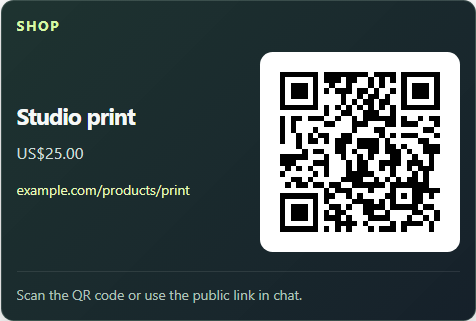
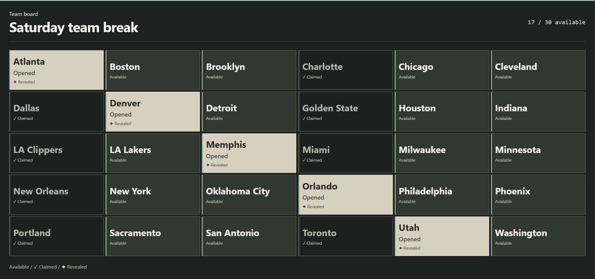
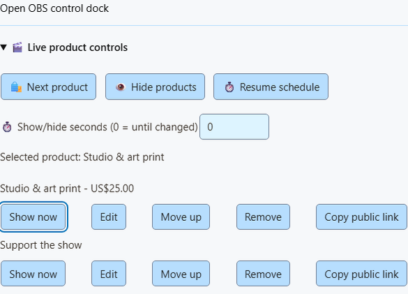

معاينة ↗الأدلة / التجارة
تراكبات التجارة
المنتجات والخانات المتاحة والمبيعات الأخيرة. اختر ما يحتاج جمهورك إلى رؤيته.
اختيار طريقة عرض
تستخدم هذه المعاينات بيانات تجريبية.
 معاينة ↗
معاينة ↗02 / لوحة الكشف
لوحة خانات مرقمة
لوحة مرقمة حتى 20 × 6. سجّل حجزًا، ثم اكشف العنصر المخصص له.
الإعداد →
معاينة ↗ معاينة ↗
معاينة ↗04 / المبيعات الأخيرة
المبيعات الأخيرة
اعرض المشتريات الأخيرة كقائمة أو جدار أو شريط مدمج. أضف سعرًا عندما تعرفه.
الإعداد →ثلاث خطوات
الاتصال بـOBS
- اختر طريقة العرضافتح تحقيق الدخل (Monetization) في نافذة SSN المنبثقة. أضف منتجًا أو اربط متجرًا أو افتح لوحات الخانات والمبيعات الأخيرة.
- احفظ، ثم انسخ رابطهاستخدم حفظ الإعداد (Save setup) للمزودين. تُحفظ عناصر تحكم اللوحة فورًا. انسخ رابط OBS الخاص بالعرض.
- إضافة مصدر متصفح OBSالصق الرابط. ابدأ بـ800 × 600 لبطاقة منتج، أو 1920 × 1080 للوحة. أبقِ SSN قيد التشغيل.
يظهر العرض وحده في البث. تحكم فيه داخل SSN؛ وتكون لوحة إرساء التحكم في OBS اختيارية.
روابط المنتجات والدعم (Products & support links)
المنتجات وروابط الدعم
- أضف رابطًا عامًا واسمًا وصورة أو سعرًا اختياريًا.
- اختر متجر, هدية, الدعم أو انضمام، ثم احفظ.
- استخدم عرض / التالي / إخفاء / استئناف (Show / Next / Hide / Resume) للتحكم في عرض المنتجات.
يروّج رابط المنتج لعنصر. اربط المتجر بصورة منفصلة لتنبيهات الشراء.
رموز QR والتدوير وخيارات العرض
احفظ حتى 20 رابطًا عامًا. ثبّت أحدها أو دوّر بينها؛ يبقى كل منها ظاهرًا لمدة لا تقل عن 15 ثانية. شارك الرابط العام في الدردشة أيضًا للمشاهدين على الهاتف.
اختر Showcase أو Support card أو Activity alerts لمصادر OBS منفصلة. يوجد النمط المدمج والحجم والزاوية والعرض المؤقت ضمن Overlay link options. الأسعار اليدوية قيم مسجلة في لحظة معينة؛ ولا تزيل المشتريات المنتجات اليدوية.

اربط ما تستخدمه
اتصالات المتاجر والدفع
Shopify ومتاجر صناع المحتوى
استورد المنتجات واربط تنبيهات الشراء.
دليل Shopify →Fourthwall ومتاجر أخرى →
بائع eBay
اربط حساب البائع، وأضف قوائمك، واعرض المنتجات أو تنبيهات المشتريات المدفوعة.
معاينة →كيف تختلف المبيعات عن المزادات
فقط الطلبات المدفوعة للبائع المتصل يمكن أن تنتج تنبيهات شراء. المزايدة أو انتهاء المزاد أو تغير المخزون لا يثبت الدفع. تُحدَّث الأسعار كل دقيقة تقريبًا.
تزيل أول عملية شراء القائمة المحددة من تدوير عرض المنتجات. تظل المشتريات اللاحقة تصدر تنبيهات. تُحذف هوية المشتري؛ ولا تعيد الاستردادات فتح الإدخالات. يتطلب ربط البائع توفر خدمة SSN الخاصة بـeBay.
هدايا Throne
أدخل اسم المستخدم واحفظ، ثم الصق Webhook URL الخاص بـSSN في Throne.
معاينة →مراتب الهدايا والمساهمات
ترفع الهدايا المكتملة ترتيبك. تعرض المساهمات تنبيهًا؛ ويرتفع الترتيب عندما تُموَّل الهدية بالكامل. لا يخمّن SSN أي عنصر من قائمة الأمنيات تم شراؤه.
أبقِ SSN متصلًا. الترتيب محلي لهذا التثبيت؛ ولا تعكسه الاستردادات أو الإلغاءات. تبقى الهدايا المجهولة مجهولة.
إعداد خطاف ويب Throneقائمة أمنيات Amazon
حمّل قائمة أمنيات عامة. أكّد المشتريات بنفسك للتقدم في السلم الذي يبدأ بالأرخص.
معاينة →الاستيراد والتأكيد
راجع الأسعار المستوردة والعناصر المفقودة؛ استخدم الإدخال اليدوي إذا فشل الاستيراد. إزالة عنصر من Amazon لا تثبت شراءه. استخدم عملة واحدة لكل سلم.
بعد التحقق من الشراء، اختر تأكيد شراء العنصر الحالي (Confirm current item bought). يشمل التراجع آخر تأكيد أثناء تشغيل SSN الحالي. راجع إعدادات المشاركة العامة والعنوان في قائمة أمنياتك.
تبرعات NinjaBacker
اربط Stripe في NinjaBacker. أدخل اسم المستخدم ومعرّف Tip ID الخاص في SSN.
معاينة →موجز مباشر أم خطاف ويب موثوق؟
الموجز المباشر هو أبسط إعداد. يضع خطاف الويب الموثوق التبرعات الموقعة في قائمة انتظار لمدة تصل إلى سبعة أيام، بما فيها فترة إيقاف SSN. اتبع تعليمات الإعداد وأرسل تبرعًا اختباريًا من لوحة التحكم.
يبقى معرّف Tip ID الخاص خارج روابط التراكبات. تبقى التبرعات المجهولة مجهولة. لا تعكس الاستردادات التنبيهات أو المكافآت.
دليل إيصال NinjaBackerرابط دعم بسيط
استخدم بطاقة دعم مع أي رابط عام للتبرع أو الهدايا أو العضوية.
معاينة →لا يلزم ربط حساب لعرض الرابط. تتطلب تنبيهات الدفع اتصالًا مدعومًا.
تنبيهات الشراء والأتمتة
الاحتفال بعملية شراء
امنح عملية البيع صوتًا أو صورة خاصة.
مؤثرات التنبيهات →طباعة رسالة شكر
استخدم تفاصيل المنتج المتاحة على ملصق في تطبيق Windows.
دليل الطابعة →أتمتة الخطوة التالية
طابق المزود والحدث في Event Flow.
Event Flow →تفاصيل الأحداث والإيصال
استخدم Event Type لـ purchase, gift, giftcontribution أو giftfunded. تطابق التبرعات hasDonation. اكتمال التمويل الجماعي إنجاز وليس دفعة أخرى. لا تشغّل تعديلات اللوحة أو المبيعات اليدوية مكافآت الشراء أبدًا.
ابدأ بمسار صوت واحد لكل حدث. الإعلانات اختيارية. يحذف Shopify وeBay هوية المشتري؛ اطبع تفاصيل المنتج بدلًا منها. لا تثبت نتيجة الإيصال ظهور المصدر في OBS أو خروج الورق أو تنفيذ الطلب. نتائج أوامر التحكم.